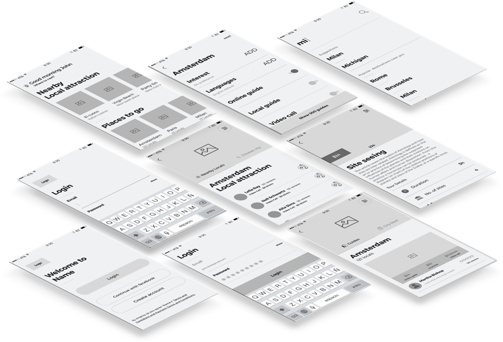
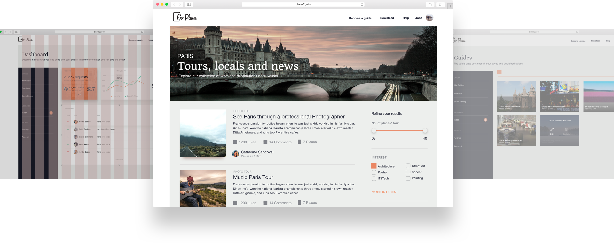
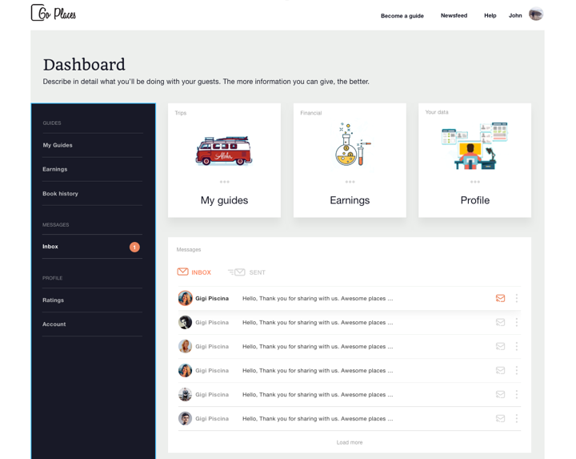

I started designing Places2Go as an on-the-side challenge. With this product, I try to offer the off the beaten path travelers the option of finding new, authentic places, that are usually known only by locals.
Users can navigate through the pages, filtering each place or guide by their interests. One of the top goals for Places2Go is to create a community. Users can engage with locals and can rent a guide via the platform.
Mobile first or not
We all find out the hard way that personal projects are the most complicated to work on. In my case, this wasn’t as I expected to be, because I’m the worst critique of my work, but because of the hundreds of business decisions that need to be done. Dealing with a lot of spreadsheets and financial ‘goodies’ are not a designer’s favorite piece of the pie.
I’ve decided to first explore the mobile app approach by doing a lot of wireframes. Time is the key. But after a good night’s research for iOS developers and fees, the idea of starting app-first was replaced by going responsive-first.
The conclusion: wireframes archived and sent to backlog. They will be pushed out as soon as the app gets traction.

Search Page
Navigation was my main focus. How can someone find what he is interested in without opening or without hovering over anything?
I want my mom to be able to understand and use the product, so no hidden features.
After a few tests with grids and cards, we decided to go with the list view. In addition to likes, ratings, comments and adding pictures, I wanted the locals to have the possibility to describe what they’re including in their guides.

Dashboard
The dashboard design was another challenge that we faced along the journey. One of the issues was, well… us. At some point we forgot our goals and we jammed the product up with a lot of features. Rookie mistake, but hey, this is how we learn, right?
So, we returned to the main goal of the dashboard. That the user can easily navigate through different areas of our product. After quick paper wireframing we realized that the best way to tackle the problem is with a card layout design, even though we risk breaking the flow of the website (remember the list design for the search results page).

Extra Topping
Here are some more designs that are relevant for the project: